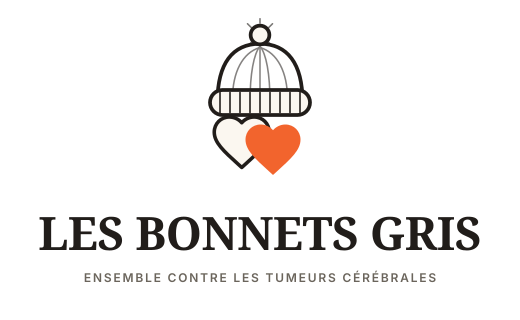

Design System · v0.1 · Draft pour validationUne love brand, pas une charité de la compassion
Fondations et composants du futur site lesbonnetsgris.fr — dérivés de la planche de marque validée et des décisions actées dans Notion (03 · Design & Système de marque). Ce document est un brouillon de travail soumis à validation avant la phase maquettes Figma (15–31/07).
Fondations
CouleursNuancier fonctionnel, correction AA appliquée
TypographieFraunces + Inter, auto-hébergées
Espacement & grilleÉchelle 4px, rayons, ombres, breakpoints
LogoSymbole, lockups, favicon, règles d'usage
Composants
BoutonsPrimaire, secondaire, ghost, sticky mobile
Badges & tagsÉtiquettes de sens, argument fiscal
CardsStandard, élevée, neutre
Carte témoignage★ Priorité Notion
Compteur d'impact★ Priorité Notion
Barre de progression cagnotte★ Priorité Notion
Transition ICM★ Priorité Notion, critique
FormulairesMontants, opt-in RGPD, erreurs
NavigationHeader, menu mobile
FooterNewsletter, réseaux, mentions légales
Patterns
Prochaine étape : validation par Christelle Arrighi avant le 28/07 (jalon « Charte graphique validée », Notion Planning Phase 3), puis transmission à la phase maquettes Figma.